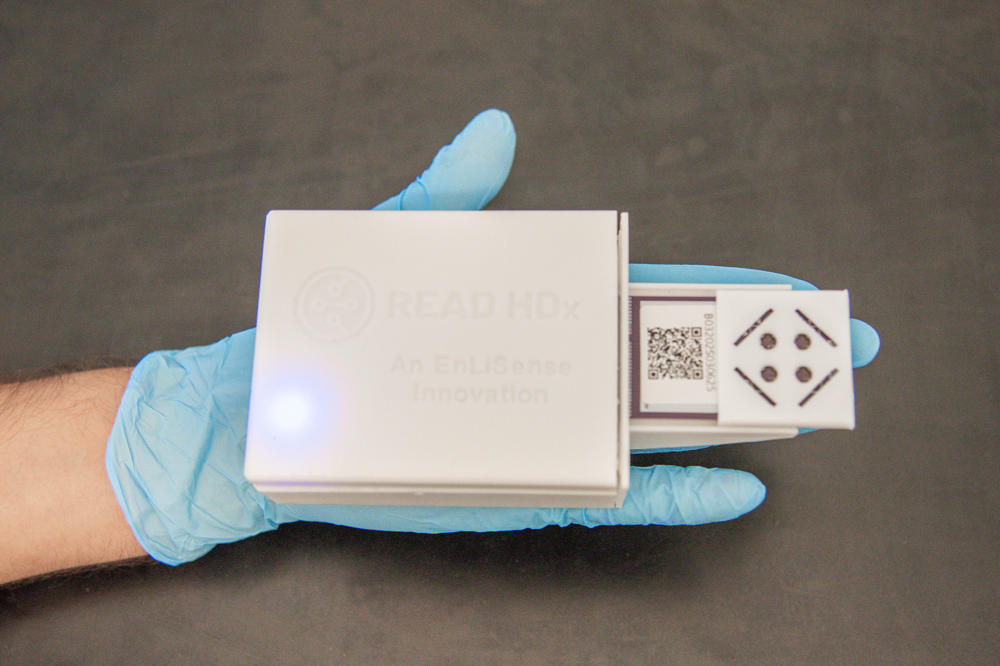

Intelligent Multiplexed EIS Biosensor for Food Safety
Developed a multiplexed electrochemical impedance spectroscopy platform for simultaneous detection of antibiotics and pesticides in complex food matrices.
- Designed and fabricated sensors using screen-printing methods and full electrochemical workflows.
- Validated performance in chicken, shrimp, milk, salad, and agricultural soil run-off matrices.
- Performed spike-and-recovery, reproducibility, and matrix-effect testing for real-world translation.